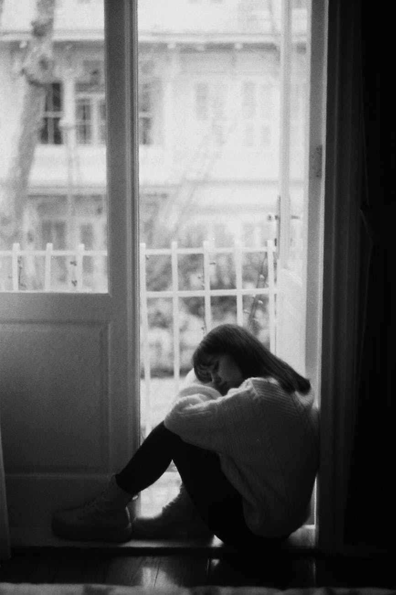

There are no better friend than words, they neither judge nor rebuke.
Just keep sailing.
life has a mysterious ways of manifestation to different people, but it is those that take things positively and keep sailing through the endless river that make it in life.Dont just sit there and call yourself a looser, everyone holds success on their palms,the difference is how we decide to take things.

Shattered
She finally broke down crying and in her heart she felt more relief than pain, not because they were tears of joy but because her smile had more agony than her tears.The sweet smile she had trained to reach up her eyes and beam with ecstasy was actually pain in disguise for she saw more […]
15th Oct 202215th Oct 2022
Found
I never got to pour out my feelings till I discovered the most wonderful beings of all,that judged me not and accepted me for who I was.Ones that had a tinge of honesty in their smiles and gave kisses of sincerity even after their numerous encounters with my flaws….. Not that I have no dark […]
13th Oct 202123rd Jul 2022
Sickening Reality
Suddenly, I feel nothing, everything’s gone quiet, my soul and heart’s gone numb………I’m a living carcase and I blame it all on you mom, you just left …. not forgetting to take with you the happiness and peace we once knew🤧 you left us scarred with wounds that turn fresh every second…… Here I am […]
5th Sep 202115th Sep 2021
New Beginnings
Mixed feelings,a feeling of both happiness and sadness recides in my heart,an overwhelming feeling of fear and anxiety but am finally in and there is no going back,it’s time to show the world who I can become for there is a large world out there waiting for people who believe in themselves,those that have gone through hell and are still standing strong and I guess am just the right person for this world…..no everyone is,we just need to pull ourselves together and develop such great personality that the evil of the world will not be able to change what we stand for and finally our new beginnings will become our better present and future current.